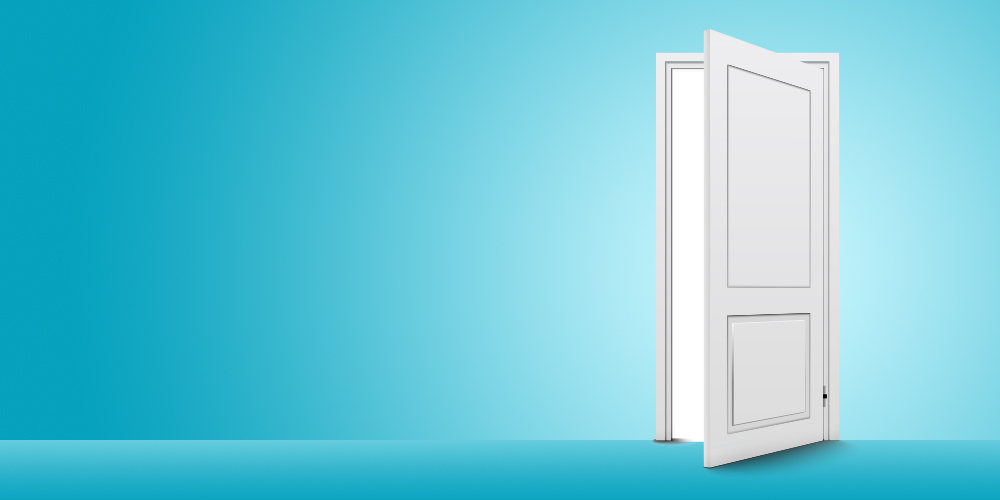
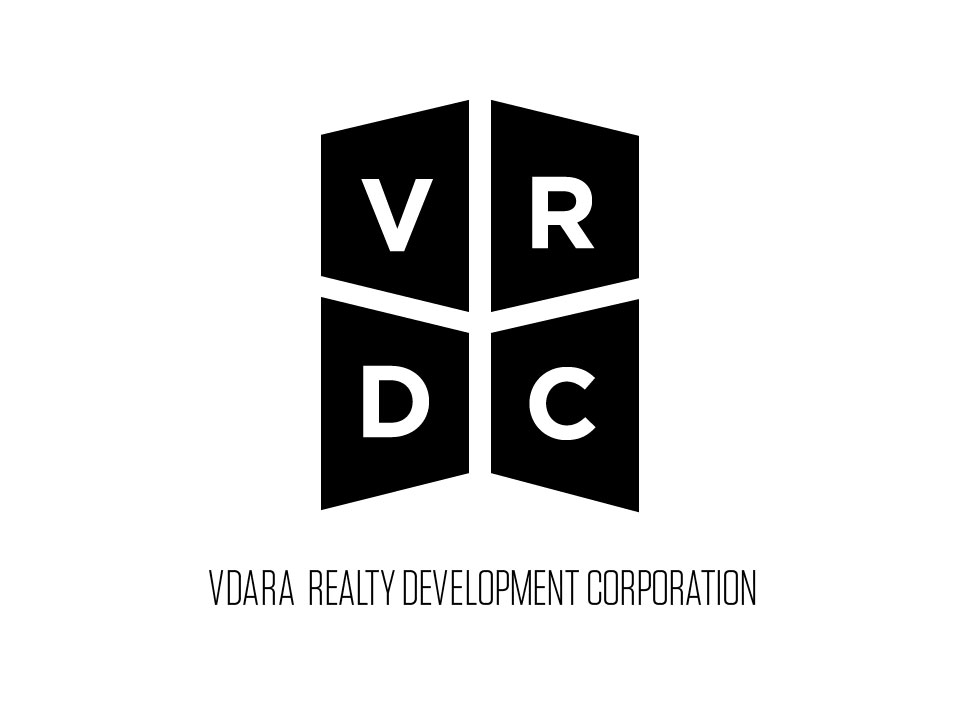
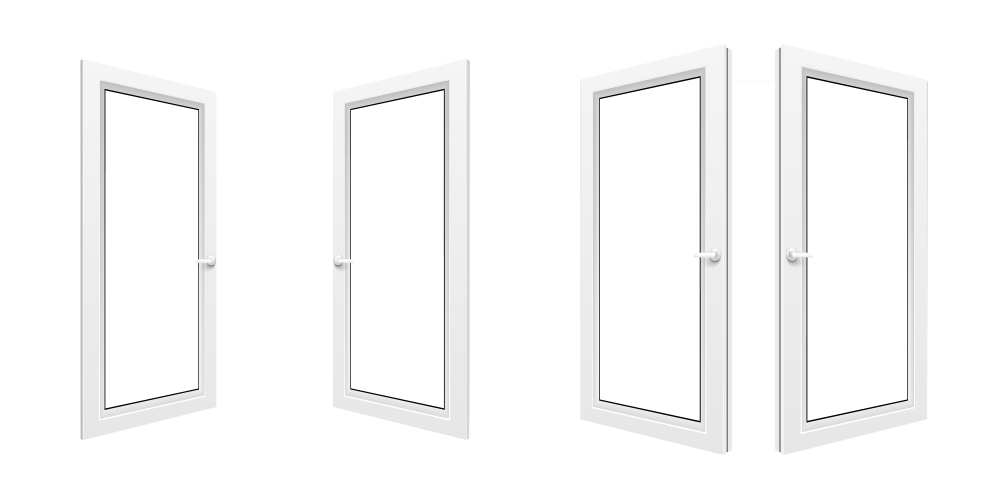
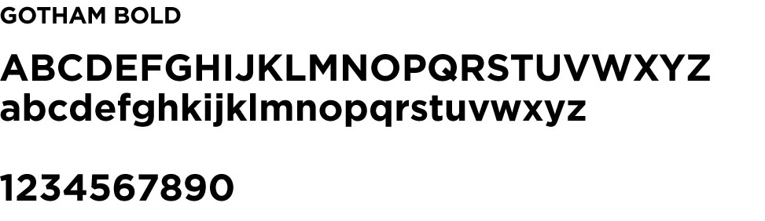
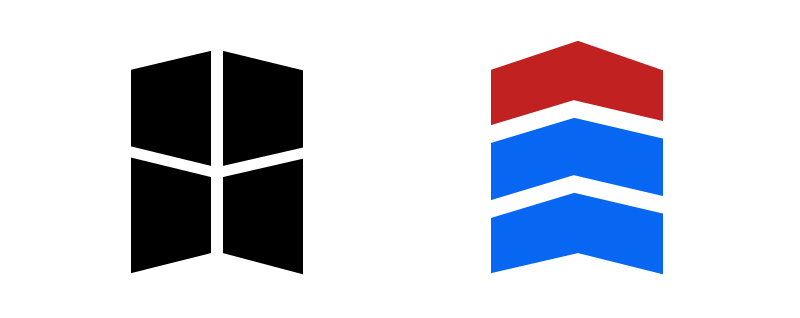

Open Doors, Open Opportunities
Concept

An open door makes a movement or passage easier for a person. Symbolically, it is an invite for something to happen or to allow something new to begin.
It is only appropriate to use such a powerful symbol as a jumping off point for our concept.
Doors symbolize opportunity.
Doors symbolize a fresh start.
Doors symbolize endless possibilities.
Before that first handshake, before drafting that agreement, we open doors.
A New Hope
VRDC is not just your average realty development company. VRDC wants to focus not only in creating excellent infrastructures, it is also looking at building relationships, improving lives whether it may be some place where you can start anew or just another investment opportunity. VRDC makes sure that in whatever project it undertakes, the project is the customer and improving the quality of not only their life, but also their environment.
The Symbol

There are 2 doors that represent two perspectives that both open to opportunities whether for the person behind the door or the one coming right in.
First perspective, opening away represents VRDC opening the doors to its customers. VRDC finds and looks out for a suitable location to develop, then "opens it up".
VRDC can open all the doors, but without the customer's appreciation, it will not be too worthwhile. THIS leads us to the 2nd perspective — door being pushed inward, which is the customer walking in and becoming a 'partner'.
Getting to an amicable agreement is a 2-step process:
- The initial pitch (opening the door).
The signing (walking in).
Typography
Primary Typeface : Gotham Bold
Communication relies not only on the message said, but how we say it. To be a successful communicator, the medium and the message should be in agreement. We can say what we want to say but if the medium is not effective, our message will get lost in the noise.
A typeface is essentially the company's voice. So choosing the right typeface is essentially selecting the company's voice. Too loud and the company might appear desperate, too soft, and the company might look weak. The right balance of tone and look should be struck.
Gotham Bold by Hoefler & Frere-Jones was chosen as our primary typeface for its modern look and how it emulates stability and strength. Gotham Bold is a typeface used by the Barack Obama campaign, too.
Gotham Bold is firm without being too bossy. It is stable without being too stiff. It is assertive without being too imposing. Its hard lines are balanced with its perfect circles. It is a typeface that is most suited for the urban setting.
Gotham Bold is thick and mono-stroked (1 width), making it easily recognizable from a distance. Gotham looks great when enlarged. It was actually designed to be used in signages that are large enough to be viewed and read from a distance.
A real estate developer should emmulate these 3 things. Stability, Strength and Security which Gotham is perfect for.
Secondary Typeface : Tungsten
Tungsten was used as our secondary typeface, another typeface from HF&J, Tungsten was chosen for its slender and sleek form. It compliments Gotham's wider em-width.
Though Tungsten can hold its own as a display font, Tungsten also is an excellent support typeface. Given that its form is so sleek and slender, juxtaposing it alongside Gotham makes Gotham even more powerful and makes all the more noticeable.
Something Extra

It is no accident that the encompassing shape is a chevron that is pointed upwards suggesting progress.
Building towards progress, that is.